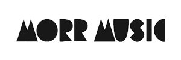

대표 로고대표 브랜드 마크
대표 로고대표 브랜드 마크홈 > 브랜드 매거진 > Minus
Minus
마이너스(Minus, m_nus)는 1998년 테크노 아티스트 리치 호틴이 설립한 미니멀 테크노 레이블이다. 캐나다 윈저와 독일 베를린을 기반으로 한 아티스트 운영 독립 레이블이다.
산업 분야 미디어·엔터테인먼트 · 공개 등급 디렉토리 · 브랜드 평가 3.2 ★
한눈에 보는 브랜드
마이너스(Minus, m_nus)는 1998년 테크노 아티스트 리치 호틴이 설립한 미니멀 테크노 레이블이다. 캐나다 윈저와 독일 베를린을 기반으로 한 아티스트 운영 독립 레이블이다.
브랜드 관점
마이너스는 리치 호틴이 세운 미니멀 테크노의 대표 독립 레이블이다. 설립·운영 주체, 주력 장르, 대표 아티스트를 함께 보면 미디어·엔터테인먼트 안에서의 위치가 또렷해진다.
시작과 성장
1998년 리치 호틴(플라스틱맨)이 설립해 캐나다 윈저와 독일 베를린을 거점으로 운영했다. 미니멀 테크노를 정의하며 막다, 마크 훌레 등을 배출했다.
브랜드 아이덴티티
Minus의 아이덴티티는 브랜드명, 로고 사용 여부, 업종 언어, 국가적 배경을 중심으로 정리됩니다. 공개 로고 자산은 추후 권리 확인 후 보강할 수 있도록 텍스트 메타데이터 중심으로 관리합니다.
확장 지식
캐나다 윈저와 독일 베를린을 기반으로 한 미니멀 테크노 독립 레이블이다.
제품과 서비스
미니멀 테크노 음반을 발매한다. 리치 호틴, 막다 등이 대표 아티스트다.
사람들
리치 호틴이 1998년 설립했다.
현재 상태
타임라인
정리된 연도형 이벤트가 없습니다.
BI/CI 변천사
대표 로고대표 브랜드 마크함께 읽을 브랜드
 미디어·엔터테인먼트 · 디렉토리DJM Records
미디어·엔터테인먼트 · 디렉토리DJM RecordsDJM 레코드(DJM Records)는 1969년 영국에서 음악 출판사 딕 제임스 뮤직 산하로 만들어진 음반 레이블이다. 엘튼 존의 초기 영국 음반을 발매한 것으로...
 미디어·엔터테인먼트 · 디렉토리Kompakt
미디어·엔터테인먼트 · 디렉토리Kompakt콤팍트(Kompakt)는 1998년 독일 쾰른에서 설립된 일렉트로닉 음반 레이블이자 유통사다. 미니멀 테크노·마이크로하우스를 대표하는 독립 레이블로, 'Total'...
 미디어·엔터테인먼트 · 디렉토리Megaforce Records
미디어·엔터테인먼트 · 디렉토리Megaforce Records메가포스 레코드(Megaforce Records)는 1982년 존·마샤 자줄라 부부가 미국에서 설립한 헤비메탈 레이블이다. 메탈리카의 데뷔작 'Kill 'Em All...
Bo
Bonsound
미디어·엔터테인먼트 · 디렉토리Bonsound봉사운드(Bonsound)는 2004년 캐나다 퀘벡 몬트리올에서 설립된 인디 음반 레이블이다. 음반·매니지먼트·공연을 아우르는 퀘벡의 주요 인디 레이블이다.
 미디어·엔터테인먼트 · 디렉토리Lookout! Records
미디어·엔터테인먼트 · 디렉토리Lookout! Records룩아웃! 레코드(Lookout! Records)는 1987년 래리 리버모어와 데이비드 헤이즈가 미국 캘리포니아에서 설립한 펑크 레이블이다. 그린데이 초기작을 발매한...

미디어·엔터테인먼트 · 디렉토리Morr Music모르 뮤직(Morr Music)은 1999년 토마스 모르(Thomas Morr)가 독일 베를린에서 설립한 인디 일렉트로닉 음반 레이블이다. 인디팝과 일렉트로니카를 결...
Zi
ZickZack Schallplatten
미디어·엔터테인먼트 · 디렉토리ZickZack Schallplatten치크차크(ZickZack)는 1980년 알프레트 힐스베르크가 독일 함부르크에서 설립한 펑크·포스트펑크 레이블이다. 초기 독일 펑크와 노이에 도이체 벨레(NDW) 언더...
Ar
Art Museum
미디어·엔터테인먼트 · 편집 검수Art MuseumArt Museum는 2016년에 기록된 Museums, Galleries & Libraries 계열의 브랜드 아이덴티티 사례입니다. Underline Studio가...